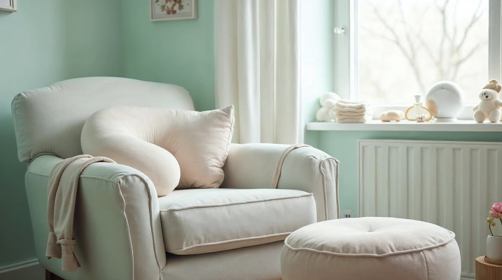
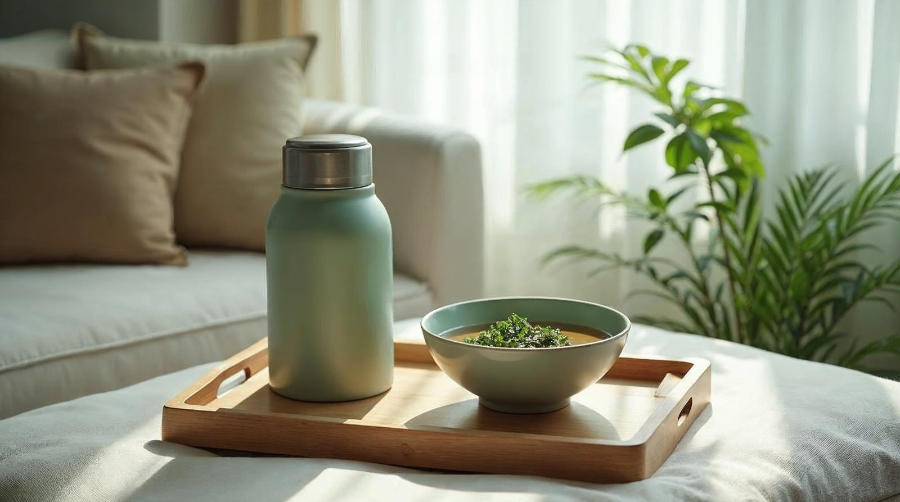
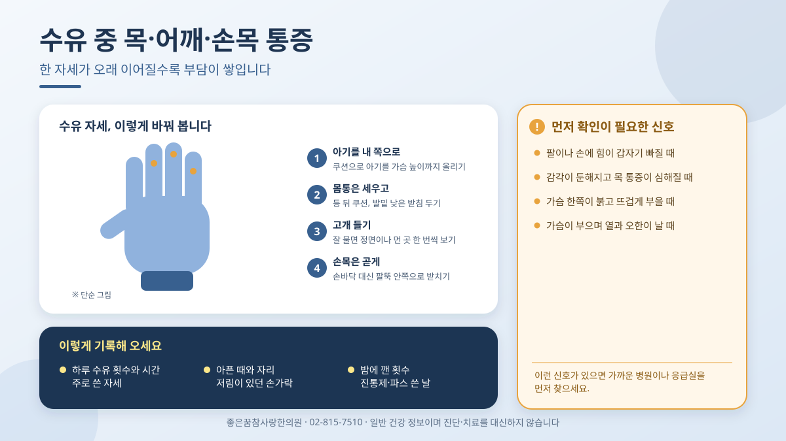

이종호 한의사 감수좋은꿈참사랑한의원 대표원장 (한의사 면허번호 19769)발행 2026-11-26 · 수정 2026-11-27
이 글의 차례
새벽 세 시, 불을 낮춘 방에서 아기를 품에 안고 수유를 시작합니다. 아기가 잘 물었는지 보느라 고개는 자연스럽게 아래로 숙여지고, 아기 머리를 받친 손목은 한쪽으로 꺾여 있어요. 수유가 끝나 아기를 눕히고 나서야 목덜미와 날개뼈 사이가 돌처럼 굳어 있다는 걸 알아차리시죠.
진료실에서 수유 중인 어머니들을 뵈면, 아프다는 말보다 미안하다는 말을 먼저 하시는 경우가 많아요. 이 정도로 아파도 되는 건지, 다들 이렇게 키우는데 나만 유난인 건지 걱정하시거든요. 저는 그 말씀을 들을 때마다 몸이 얼마나 오래 버텨 왔는지를 먼저 떠올립니다.
유난이 아니에요. 원래 그래요. 수유는 하루 여덟 번에서 열두 번, 한 번에 이십 분에서 사십 분씩 이어지기도 하거든요. 같은 자세를 하루 몇 시간씩, 쉬는 날 없이 반복하는 셈이에요. 어떤 직업이라도 이 정도로 한 자세를 이어 가면 목과 어깨가 아프지 않기가 더 어렵습니다.
그러니까 사실은 둘을 나눠서 보셔야 해요. '몸이 약해서 아픈 것'과 '한 자세를 오래 버텨서 아픈 것'은 다른 얘기예요. 수유 중의 목과 손목 통증은 뒤쪽인 경우가 많아서, 자세와 쉬는 틈을 조금만 바꿔도 덜어 볼 여지가 있어요.
이 글에서는 수유하면서 목과 어깨, 날개뼈 사이, 손목이 왜 아파지는지, 어떤 통증은 자세를 바꾸는 것으로 덜어 볼 수 있는지, 그리고 한의원에서는 무엇을 여쭙고 어떻게 함께 살피는지를 차근차근 정리해 볼게요.
왜 수유를 하면 목과 어깨가 먼저 아파질까요
사람의 머리는 생각보다 무겁습니다. 고개를 똑바로 들고 있을 때는 목뼈 위에 얹혀 있지만, 앞으로 숙일수록 목 뒤 근육이 그 무게를 붙잡고 버텨야 합니다. 아기 얼굴을 내려다보는 수유 자세에서는 이 근육들이 수십 분 내내 쉬지 못합니다.
여기에 아기를 받치느라 어깨가 앞으로 말리고 귀 쪽으로 올라갑니다. 어깨를 으쓱한 채로 오래 있으면 목에서 어깨로 이어지는 근육이 짧아지고 단단해집니다. 그래서 수유하는 분들은 목덜미에서 어깨 위쪽으로 넓게 뻐근함을 느끼시는 경우가 많습니다.
날개뼈 사이가 아픈 것도 같은 흐름입니다. 어깨가 앞으로 말리면 등 위쪽은 둥글게 굽고, 날개뼈를 붙잡는 근육들은 늘어난 채로 계속 힘을 써야 합니다. 늘어난 상태로 버티는 근육은 쉽게 지치고, 그 피로가 날개뼈 안쪽의 콕콕 쑤시는 느낌으로 나타나곤 합니다.
출산 직후의 몸도 이유가 됩니다. 임신과 출산을 거치며 몸을 지탱하던 배와 허리의 힘이 약해진 상태라, 앉아 있을 때 몸통을 곧게 세우기가 쉽지 않습니다. 몸통이 무너지면 그만큼 목과 어깨가 대신 힘을 쓰게 됩니다. 잠이 부족해 근육이 회복할 시간이 짧다는 점도 한몫합니다.
손목과 엄지 쪽은 왜 따로 아파질까요
수유할 때 아기 머리를 손바닥으로 받치거나, 젖을 물리기 쉽게 가슴을 손으로 잡아 줄 때 손목은 한쪽으로 꺾이고 엄지는 넓게 벌어집니다. 이 자세가 하루에도 여러 번 반복되면 엄지를 움직이는 힘줄이 지나가는 손목 바깥쪽에 부담이 모입니다.
이렇게 엄지 쪽 손목이 시큰하고 엄지를 굽히거나 손목을 새끼손가락 쪽으로 꺾을 때 찌릿한 통증이 생기면, 흔히 드퀘르뱅 건초염이라고 부르는 상태를 함께 생각해 봅니다. 아기를 들어 올릴 때 엄지와 검지 사이로 겨드랑이를 받치는 동작도 같은 자리를 자주 씁니다.
손끝이 저리거나 새벽에 손이 저려 깨는 경우는 조금 다르게 봅니다. 이때는 손목 안쪽을 지나는 신경이 눌리는 흐름인지, 목에서 내려오는 신경과 관련이 있는지를 나누어 살핍니다. 아픈 자리가 손목이라도 원인이 같지 않을 수 있어서, 통증과 저림을 구분해 말씀해 주시면 좋습니다.

수유 자세마다 아픈 곳이 다를 수 있나요
네, 어떤 자세를 주로 쓰시는지에 따라 불편한 자리가 조금씩 달라집니다. 요람 자세처럼 아기를 팔에 눕혀 안는 경우에는 받치는 쪽 팔꿈치와 어깨, 목이 한쪽으로 기울어지기 쉽습니다. 늘 같은 쪽으로만 고개를 돌리면 한쪽 목만 더 뻣뻣해집니다.
옆구리에 끼듯 안는 풋볼 자세는 아기 머리를 손바닥으로 받치기 때문에 손목과 엄지에 부담이 큽니다. 누워서 하는 수유는 목과 어깨에는 비교적 편하지만, 아래쪽 팔을 오래 깔고 있거나 고개를 들어 아기를 살피느라 목을 비트는 경우가 생깁니다.
유축을 자주 하시는 분은 유축기를 손으로 잡고 있는 시간이 길어 손목과 팔뚝이 피곤해지고, 몸을 앞으로 숙이는 자세가 이어지기도 합니다. 젖병 수유도 아기를 한 팔로 안고 다른 손으로 젖병 각도를 오래 유지해야 해서 비슷한 부담이 생깁니다. 결국 방법보다 한 자세가 얼마나 오래 이어지는지가 더 중요합니다.
비슷해 보이지만 나누어 살피는 불편
수유 중 어깨 통증이라고 해서 모두 근육이 뭉친 것은 아닙니다. 팔을 위로 들거나 뒤로 돌릴 때 어깨 깊숙한 곳이 아프고 밤에 그쪽으로 눕기 힘들다면, 어깨 관절 주변 힘줄의 문제인지 함께 살핍니다. 이때는 움직이는 범위를 직접 확인하는 것이 중요합니다.
목이 아프면서 팔 바깥쪽이나 손가락 쪽으로 저린 느낌이 길게 뻗어 내려간다면, 목에서 나오는 신경이 예민해진 흐름일 수 있습니다. 반대로 등 위쪽과 가슴 옆이 함께 뻐근하고 숨을 깊게 쉴 때 결리는 느낌이 있다면 등 근육과 갈비뼈 사이 근육의 피로를 먼저 생각해 봅니다.
수유하는 분의 어깨와 등 통증 가운데 가슴 상태와 연결된 경우도 있습니다. 가슴이 딱딱하게 붓는 젖몸살이 있으면 그쪽 어깨와 겨드랑이까지 묵직하게 당길 수 있습니다. 그래서 진료실에서는 근육과 관절만 보지 않고 가슴이 붓거나 아픈 곳이 없는지도 함께 여쭙습니다.
스스로 점검해 보세요
아래 항목 가운데 해당하는 것이 있는지 하나씩 짚어 보세요. 진단을 위한 것이 아니라, 진료실에서 이야기를 나눌 때 출발점을 찾기 위한 것입니다.
- 수유가 끝나고 고개를 들면 목 뒤가 뻣뻣하게 당긴다
- 날개뼈 사이나 안쪽을 누르면 아프고 시원한 자리가 있다
- 한쪽으로만 고개를 돌리고 한쪽 팔로만 아기를 받치는 편이다
- 엄지를 손바닥 안에 넣고 주먹을 쥔 채 손목을 꺾으면 찌릿하다
- 새벽에 손끝이 저려 깨거나 아침에 손이 붓는 느낌이 있다
- 아기를 들어 올릴 때 손목이나 팔꿈치 바깥쪽이 시큰하다
해당하는 항목이 많을수록 자세와 반복 동작의 영향이 크다는 뜻일 수 있습니다. 어느 쪽이 더 아픈지, 하루 중 언제 심해지는지를 함께 적어 두시면 진찰할 때 많은 도움이 됩니다.
먼저 이렇게 여쭙니다
처음 오시면 저는 대략 이런 순서로 여쭙니다. 미리 떠올려 오시면 짧은 시간에도 이야기가 수월해집니다.
- 출산하신 지 얼마나 되었고, 수유는 하루 몇 번, 한 번에 얼마나 하시나요?
- 직접 수유, 유축, 젖병 수유 가운데 어떤 방법을 주로 쓰시나요?
- 가장 아픈 곳은 목, 어깨, 날개뼈 사이, 손목 가운데 어디인가요?
- 아픈 것인지, 저린 것인지, 힘이 빠지는 것인지 구분이 되시나요?
- 밤에 몇 번 깨시고, 낮에 잠깐이라도 누워 쉬는 시간이 있나요?
- 지금 드시는 약이나 영양제, 진통제나 파스를 쓰고 계신가요?
통증이 출산 전부터 있었는지, 출산 뒤 새로 생겼는지도 여쭙습니다. 임신 전부터 목이나 어깨가 자주 뭉치던 분은 수유를 시작하며 그 자리가 더 도드라지는 경우가 많습니다. 아기를 함께 돌보는 가족이 있는지도 생활 계획을 세울 때 참고가 됩니다.

일상에서 먼저 해 볼 수 있는 것
자세를 완벽하게 바꾸려 하기보다, 몸이 버티는 시간을 조금씩 줄여 주는 것부터 시작하시면 됩니다. 아기가 우선인 시기라 큰 계획은 오래가기 어렵습니다. 아래 가운데 한두 가지만 골라 보세요.
- 아기를 가슴 쪽으로 끌어올리고, 몸을 아기 쪽으로 숙이지 않기
- 수유 쿠션이나 접은 이불로 아기 높이를 맞추고 팔꿈치 아래도 받치기
- 등 뒤에 쿠션을 대어 허리와 등을 기대고, 발밑에 낮은 받침 두기
- 아기가 잘 물고 나면 고개를 들어 정면이나 먼 곳을 한 번씩 보기
- 좌우 자세를 번갈아 쓰고, 한쪽 팔만 받치지 않도록 하기
- 아기를 들어 올릴 때 엄지와 검지로 집지 말고 손바닥과 팔 전체로 안기
가장 효과가 큰 것은 아기를 내 쪽으로 데려오는 일입니다. 내가 아기에게 숙여 가면 목과 등이 굽지만, 쿠션으로 아기를 가슴 높이까지 올리면 몸통을 세운 채로 수유할 수 있습니다. 처음에는 어색해도 며칠만 해 보시면 목이 덜 당기는 것을 느끼실 수 있습니다.
수유가 끝난 뒤에는 짧은 풀어 주기를 해 보세요. 어깨를 귀 쪽으로 천천히 올렸다가 힘을 빼며 툭 내리기, 양손을 등 뒤에서 깍지 끼고 가슴을 살짝 펴기, 고개를 옆으로 천천히 기울여 목 옆을 늘이기 정도면 충분합니다. 아픈 범위까지 억지로 늘이지는 마세요.
손목이 시큰할 때는 손목을 꺾는 시간을 줄이는 것이 먼저입니다. 아기 머리를 손바닥이 아닌 팔뚝 안쪽에 얹고, 휴대폰은 수유 중에 한 손으로 오래 들고 있지 않는 것이 좋습니다. 밤에 손목이 꺾인 채 자는 습관이 있다면 손목을 곧게 두도록 신경 써 보세요.
따뜻한 수건으로 목과 어깨를 데우면 굳은 근육이 한결 풀리는 느낌을 받으시는 분이 많습니다. 다만 가슴이 붓고 열감이 있을 때는 가슴 쪽을 데우지 않는 것이 좋습니다. 진통제나 파스를 쓰실 때는 수유 중이라는 점을 약사나 의사에게 말씀하고 확인받으세요.
잠과 휴식도 근육 회복에 직결됩니다. 밤 수유가 이어지는 시기에는 한 번이라도 가족에게 맡기고 길게 자는 시간을 만들어 보시길 권합니다. 몸이 쉬는 시간이 생기면 같은 자세에도 통증이 덜 쌓이는 것을 느끼시는 경우가 많습니다.
한의원에서 함께 살필 수 있는 경우
- 수유 뒤 목과 어깨가 굳어 고개 돌리기가 불편한 경우
- 날개뼈 사이가 쑤시고 등이 무겁게 짓눌리는 느낌이 이어지는 경우
- 엄지 쪽 손목이 시큰해 아기를 들어 올리기가 힘든 경우
- 자세를 바꿔 보아도 몇 주째 통증이 비슷하게 이어지는 경우
- 잠이 부족하고 몸이 무거워 회복이 더디다고 느끼는 경우
좋은꿈참사랑한의원에 오시면 모든 분의 맥을 먼저 짚고, 아래 '먼저 확인이 필요한' 신호가 없는지도 함께 봅니다. 그다음 목과 어깨, 날개뼈, 손목을 직접 움직여 보며 어느 자리에서 통증이 시작되는지 확인합니다. 손끝 저림이 있다면 감각과 쥐는 힘도 함께 살핍니다.
진찰한 내용을 바탕으로 지금 상태에 맞는 방법을 함께 정합니다. 굳은 근육과 아픈 자리에 침이나 약침을 쓰기도 하고, 목과 등의 정렬을 살펴 추나요법을 상의하기도 하며, 온열 같은 물리치료를 더하기도 합니다. 진료 시간에는 아기를 맡길 곳이 있는지에 맞춰 무리 없는 간격을 정합니다.
수유 중 한약은 드시는 약을 모두 확인하고 수유 상황을 살핀 뒤 신중하게 상의합니다. 처방받은 약이 있다면 상의 없이 멈추지 마시고, 손목이나 어깨 통증이 오래가거나 힘이 빠진다면 정형외과 진료를 함께 받으시도록 안내합니다. 가슴 문제는 산부인과나 유방 진료와 나란히 살핍니다.
이렇게 기록해 오시면 상담이 쉬워집니다
통증은 진료실에서 잠깐 보는 것보다 하루의 흐름 속에서 더 잘 드러납니다. 휴대폰 메모에 일주일 정도만 간단히 적어 보세요.
- 하루 수유 횟수와 한 번에 걸린 대략의 시간
- 주로 쓴 자세와 아기를 받친 쪽 팔
- 통증이 가장 심했던 때와 자리, 0부터 10까지의 정도
- 저림이나 힘 빠짐이 있었다면 어느 손가락 쪽이었는지
- 밤에 깬 횟수와 이어서 잔 가장 긴 시간
- 진통제나 파스를 쓴 날과 그 뒤의 변화
수유 자세를 사진으로 한두 장 찍어 오시는 것도 좋습니다. 본인은 잘 모르는 고개 각도나 어깨 높이가 사진에서는 한눈에 보이기 때문입니다. 아기 얼굴은 나오지 않아도 괜찮습니다.
지금의 몸을 위해
지금의 몸을 위해
아기를 먹이는 일은 하루에도 몇 번씩 돌아오고, 그 시간만큼은 내 몸을 뒤로 미루기 쉬워요. 그런데 엄마의 목과 어깨가 편해야 수유도 오래, 덜 힘들게 이어 갈 수 있거든요. 내 몸을 살피는 건 아기를 위한 일이기도 해요.
목과 손목을 살피는 건 제가 맡을게요. 대신 하나만 부탁드려요. 이번 주에는 수유할 때 쿠션 하나로 아기 높이를 올려서, 내 몸이 아기 쪽으로 숙여지지 않게만 해 주세요. 딴 건 하시던 대로 편하게 하셔도 돼요. 지금은 큰 계획보다 작은 것 하나가 오래가는 시기거든요.
못 지킨 날이 있어도 괜찮아요. 새벽에 아기가 울면 그런 거 다 잊는 게 당연하죠. 다음 수유 때 다시 쿠션을 끼우면 되는 거예요.
다음에 오시면 일주일 동안 적은 기록을 함께 펼쳐 보며 다음 걸음을 정해 봐요. 궁금한 건 그때 편하게 물어보세요.
이런 증상은 먼저 확인이 필요합니다
- 팔이나 손에 힘이 갑자기 빠지거나 감각이 둔해지고, 목 통증이 함께 심해지는 경우
- 가슴 한쪽이 붉고 뜨겁게 부으면서 열과 오한이 나는 경우
이런 신호가 있으면 한의원보다 가까운 병원이나 응급실을 먼저 찾으세요.
함께 읽으면 좋은 글
- 아기를 안거나 휴대폰을 쥘 때 엄지 쪽 손목이 찌릿한 드퀘르뱅 건초염은 어떻게 살피나요?
- 출산 뒤 아기를 안다가 손목과 손가락이 아플 때는 어떻게 하나요?
- 수유 중 가슴이 딱딱하게 붓고 아픈 젖몸살은 어떻게 살피고, 언제 진료를 먼저 받나요?
- 날개뼈 안쪽이 찌르듯 아픈 등 통증은 근육 결림과 목에서 오는 통증을 어떻게 나눠 살피나요?
- 출산 뒤 손발이 저리고 시린 느낌이 이어질 때(산후 손발 저림)는 무엇을 살피고 어떻게 지내나요?

여쭙는 것
- 출산하신 지 얼마나 되었고, 수유는 하루 몇 번, 한 번에 얼마나 하시나요?
- 직접 수유, 유축, 젖병 수유 가운데 어떤 방법을 주로 쓰시나요?
- 가장 아픈 곳은 목, 어깨, 날개뼈 사이, 손목 가운데 어디인가요?
생활에서 해 볼 것
- 아기를 가슴 쪽으로 끌어올리고, 몸을 아기 쪽으로 숙이지 않기
- 수유 쿠션이나 접은 이불로 아기 높이를 맞추고 팔꿈치 아래도 받치기
- 등 뒤에 쿠션을 대어 허리와 등을 기대고, 발밑에 낮은 받침 두기
한의원에서 함께 살필 것
- 수유 뒤 목과 어깨가 굳어 고개 돌리기가 불편한 경우
- 날개뼈 사이가 쑤시고 등이 무겁게 짓눌리는 느낌이 이어지는 경우
- 엄지 쪽 손목이 시큰해 아기를 들어 올리기가 힘든 경우
먼저 확인이 필요한 신호
- 팔이나 손에 힘이 갑자기 빠지거나 감각이 둔해지고, 목 통증이 함께 심해지는 경우
- 가슴 한쪽이 붉고 뜨겁게 부으면서 열과 오한이 나는 경우
한눈에 보는 표
| 구분 | 핵심 |
|---|---|
| 여쭙는 것 | 출산하신 지 얼마나 되었고, 수유는 하루 몇 번, 한 번에 얼마나 하시나요? 직접 수유, 유축, 젖병 수유 가운데 어떤 방법을 주로 쓰시나요? |
| 생활에서 해 볼 것 | 아기를 가슴 쪽으로 끌어올리고, 몸을 아기 쪽으로 숙이지 않기 수유 쿠션이나 접은 이불로 아기 높이를 맞추고 팔꿈치 아래도 받치기 |
| 한의원에서 함께 살필 것 | 수유 뒤 목과 어깨가 굳어 고개 돌리기가 불편한 경우 날개뼈 사이가 쑤시고 등이 무겁게 짓눌리는 느낌이 이어지는 경우 |
| 먼저 확인이 필요한 신호 | 팔이나 손에 힘이 갑자기 빠지거나 감각이 둔해지고, 목 통증이 함께 심해지는 경우 가슴 한쪽이 붉고 뜨겁게 부으면서 열과 오한이 나는 경우 |
자주 묻는 질문
수유 중인데 침 치료를 받아도 되나요?
수유 중이라는 점을 처음에 알려 주시면 그에 맞춰 진료 방향을 정합니다. 진찰한 뒤 지금 상태와 불편한 자리에 맞춰 침을 쓸지, 다른 방법이 나을지를 함께 상의합니다.
수유 중에 한약을 먹어도 되나요?
드시는 약과 영양제, 수유 횟수와 아기의 상태를 모두 확인한 뒤 신중하게 상의합니다. 처방받은 약이 있다면 함께 알려 주시고, 필요하면 처방한 선생님과도 상의하시도록 안내합니다.
수유를 끊어야 어깨와 손목이 덜 아플까요?
수유를 이어 갈지는 어머니와 아기의 상황에 따라 정할 일이고, 통증만으로 결정하실 필요는 없습니다. 먼저 자세와 쉬는 시간을 조정하며 몸의 부담을 덜어 보는 방법을 함께 찾아봅니다.
손목 보호대를 차고 수유해도 되나요?
손목을 곧게 잡아 주는 보호대는 꺾이는 시간을 줄이는 데 도움이 될 수 있습니다. 다만 너무 조이거나 하루 종일 차면 오히려 불편할 수 있으니, 진찰한 뒤 언제 차면 좋을지 함께 정해 보세요.
아기를 데리고 진료를 받으러 가도 되나요?
진료 공간과 시간 사정에 따라 다를 수 있으니 방문 전 전화로 먼저 문의해 주세요. 아기를 맡길 수 있는 시간에 맞춰 무리 없는 진료 간격을 정해 드립니다.
좋은꿈참사랑한의원은 재진 때 지난번 이야기부터 이어서 여쭙니다. 진료시간과 예약은 오시는 길에서 확인하세요.
어디서 상담받을 수 있나요?
좋은꿈참사랑한의원은 서울 동작구 만양로2길 2 신성빌딩 3층·5층(서울 동작구 상도동, 7호선 상도역 3번 출구 근처)에 있습니다. 한의사 3명(이종호 대표원장, 조영기 수석진료원장, 정원영 진료원장)이 진료합니다. 진료시간은 평일 09:30~20:00(점심 13:00~14:00), 토·일·공휴일 09:30~15:00이며, 방문 전 전화로 확인을 권합니다. 예약은 네이버 예약, 카카오톡 상담, 전화 02-815-7510로 받습니다.
이 글은 일반적인 건강 정보이며 개인의 진단이나 치료를 대신하지 않습니다. 증상이 있거나 복용 중인 약이 있다면 진료를 통해 확인하세요. 치료 효과는 개인마다 다를 수 있습니다.
작성 기준: 일반적으로 알려져 있는 건강 정보를 참고해 정리했습니다(대표원장 감수). 증상 기록은 1~2주 동안 하루 1회, 비슷한 시간에 적어 오시면 지난 상태와 비교하기 쉽습니다.